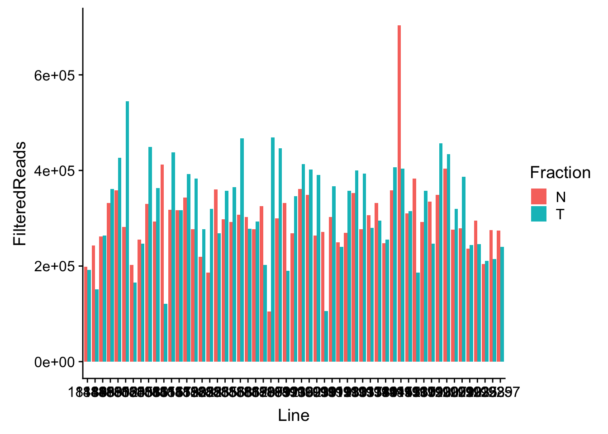

Last updated: 2019-02-16
Checks: 6 0
Knit directory: threeprimeseq/analysis/
This reproducible R Markdown analysis was created with workflowr (version 1.2.0). The Report tab describes the reproducibility checks that were applied when the results were created. The Past versions tab lists the development history.
Great! Since the R Markdown file has been committed to the Git repository, you know the exact version of the code that produced these results.
Great job! The global environment was empty. Objects defined in the global environment can affect the analysis in your R Markdown file in unknown ways. For reproduciblity it’s best to always run the code in an empty environment.
The command set.seed(12345) was run prior to running the code in the R Markdown file. Setting a seed ensures that any results that rely on randomness, e.g. subsampling or permutations, are reproducible.
Great job! Recording the operating system, R version, and package versions is critical for reproducibility.
Nice! There were no cached chunks for this analysis, so you can be confident that you successfully produced the results during this run.
Great! You are using Git for version control. Tracking code development and connecting the code version to the results is critical for reproducibility. The version displayed above was the version of the Git repository at the time these results were generated.
Note that you need to be careful to ensure that all relevant files for the analysis have been committed to Git prior to generating the results (you can use wflow_publish or wflow_git_commit). workflowr only checks the R Markdown file, but you know if there are other scripts or data files that it depends on. Below is the status of the Git repository when the results were generated:
Ignored files:
Ignored: .DS_Store
Ignored: .Rhistory
Ignored: .Rproj.user/
Ignored: data/.DS_Store
Ignored: data/perm_QTL_trans_noMP_5percov/
Ignored: output/.DS_Store
Untracked files:
Untracked: KalistoAbundance18486.txt
Untracked: analysis/4suDataIGV.Rmd
Untracked: analysis/DirectionapaQTL.Rmd
Untracked: analysis/EvaleQTLs.Rmd
Untracked: analysis/YL_QTL_test.Rmd
Untracked: analysis/characterize_apaQTLs.Rmd
Untracked: analysis/ncbiRefSeq_sm.sort.mRNA.bed
Untracked: analysis/snake.config.notes.Rmd
Untracked: analysis/verifyBAM.Rmd
Untracked: analysis/verifybam_dubs.Rmd
Untracked: code/PeaksToCoverPerReads.py
Untracked: code/strober_pc_pve_heatmap_func.R
Untracked: data/18486.genecov.txt
Untracked: data/APApeaksYL.total.inbrain.bed
Untracked: data/ApaQTLs/
Untracked: data/ChromHmmOverlap/
Untracked: data/DistTXN2Peak_genelocAnno/
Untracked: data/GM12878.chromHMM.bed
Untracked: data/GM12878.chromHMM.txt
Untracked: data/LianoglouLCL/
Untracked: data/LocusZoom/
Untracked: data/NuclearApaQTLs.txt
Untracked: data/PeakCounts/
Untracked: data/PeakCounts_noMP_5perc/
Untracked: data/PeakCounts_noMP_genelocanno/
Untracked: data/PeakUsage/
Untracked: data/PeakUsage_noMP/
Untracked: data/PeakUsage_noMP_GeneLocAnno/
Untracked: data/PeaksUsed/
Untracked: data/PeaksUsed_noMP_5percCov/
Untracked: data/RNAkalisto/
Untracked: data/RefSeq_annotations/
Untracked: data/TotalApaQTLs.txt
Untracked: data/Totalpeaks_filtered_clean.bed
Untracked: data/UnderstandPeaksQC/
Untracked: data/WASP_STAT/
Untracked: data/YL-SP-18486-T-combined-genecov.txt
Untracked: data/YL-SP-18486-T_S9_R1_001-genecov.txt
Untracked: data/YL_QTL_test/
Untracked: data/apaExamp/
Untracked: data/apaQTL_examp_noMP/
Untracked: data/bedgraph_peaks/
Untracked: data/bin200.5.T.nuccov.bed
Untracked: data/bin200.Anuccov.bed
Untracked: data/bin200.nuccov.bed
Untracked: data/clean_peaks/
Untracked: data/comb_map_stats.csv
Untracked: data/comb_map_stats.xlsx
Untracked: data/comb_map_stats_39ind.csv
Untracked: data/combined_reads_mapped_three_prime_seq.csv
Untracked: data/diff_iso_GeneLocAnno/
Untracked: data/diff_iso_proc/
Untracked: data/diff_iso_trans/
Untracked: data/ensemble_to_genename.txt
Untracked: data/example_gene_peakQuant/
Untracked: data/explainProtVar/
Untracked: data/filtPeakOppstrand_cov_noMP_GeneLocAnno_5perc/
Untracked: data/filtered_APApeaks_merged_allchrom_refseqTrans.closest2End.bed
Untracked: data/filtered_APApeaks_merged_allchrom_refseqTrans.closest2End.noties.bed
Untracked: data/first50lines_closest.txt
Untracked: data/gencov.test.csv
Untracked: data/gencov.test.txt
Untracked: data/gencov_zero.test.csv
Untracked: data/gencov_zero.test.txt
Untracked: data/gene_cov/
Untracked: data/joined
Untracked: data/leafcutter/
Untracked: data/merged_combined_YL-SP-threeprimeseq.bg
Untracked: data/molPheno_noMP/
Untracked: data/mol_overlap/
Untracked: data/mol_pheno/
Untracked: data/nom_QTL/
Untracked: data/nom_QTL_opp/
Untracked: data/nom_QTL_trans/
Untracked: data/nuc6up/
Untracked: data/nuc_10up/
Untracked: data/other_qtls/
Untracked: data/pQTL_otherphen/
Untracked: data/peakPerRefSeqGene/
Untracked: data/perm_QTL/
Untracked: data/perm_QTL_GeneLocAnno_noMP_5percov/
Untracked: data/perm_QTL_GeneLocAnno_noMP_5percov_3UTR/
Untracked: data/perm_QTL_diffWindow/
Untracked: data/perm_QTL_opp/
Untracked: data/perm_QTL_trans/
Untracked: data/perm_QTL_trans_filt/
Untracked: data/protAndAPAAndExplmRes.Rda
Untracked: data/protAndAPAlmRes.Rda
Untracked: data/protAndExpressionlmRes.Rda
Untracked: data/reads_mapped_three_prime_seq.csv
Untracked: data/smash.cov.results.bed
Untracked: data/smash.cov.results.csv
Untracked: data/smash.cov.results.txt
Untracked: data/smash_testregion/
Untracked: data/ssFC200.cov.bed
Untracked: data/temp.file1
Untracked: data/temp.file2
Untracked: data/temp.gencov.test.txt
Untracked: data/temp.gencov_zero.test.txt
Untracked: data/threePrimeSeqMetaData.csv
Untracked: data/threePrimeSeqMetaData55Ind.txt
Untracked: data/threePrimeSeqMetaData55Ind.xlsx
Untracked: data/threePrimeSeqMetaData55Ind_noDup.txt
Untracked: data/threePrimeSeqMetaData55Ind_noDup.xlsx
Untracked: data/threePrimeSeqMetaData55Ind_noDup_WASPMAP.txt
Untracked: data/threePrimeSeqMetaData55Ind_noDup_WASPMAP.xlsx
Untracked: docs/figure/peakQCplotsSTARprocessing.Rmd/
Untracked: output/picard/
Untracked: output/plots/
Untracked: output/qual.fig2.pdf
Unstaged changes:
Modified: analysis/28ind.peak.explore.Rmd
Modified: analysis/CompareLianoglouData.Rmd
Modified: analysis/NewPeakPostMP.Rmd
Modified: analysis/apaQTLoverlapGWAS.Rmd
Modified: analysis/cleanupdtseq.internalpriming.Rmd
Modified: analysis/coloc_apaQTLs_protQTLs.Rmd
Modified: analysis/dif.iso.usage.leafcutter.Rmd
Modified: analysis/diff_iso_pipeline.Rmd
Modified: analysis/explainpQTLs.Rmd
Modified: analysis/explore.filters.Rmd
Modified: analysis/flash2mash.Rmd
Modified: analysis/mispriming_approach.Rmd
Modified: analysis/overlapMolQTL.Rmd
Modified: analysis/overlapMolQTL.opposite.Rmd
Modified: analysis/overlap_qtls.Rmd
Modified: analysis/peakOverlap_oppstrand.Rmd
Modified: analysis/peakQCPPlots.Rmd
Modified: analysis/pheno.leaf.comb.Rmd
Modified: analysis/pipeline_55Ind.Rmd
Modified: analysis/swarmPlots_QTLs.Rmd
Modified: analysis/test.max2.Rmd
Modified: analysis/test.smash.Rmd
Modified: analysis/understandPeaks.Rmd
Modified: code/Snakefile
Note that any generated files, e.g. HTML, png, CSS, etc., are not included in this status report because it is ok for generated content to have uncommitted changes.
These are the previous versions of the R Markdown and HTML files. If you’ve configured a remote Git repository (see ?wflow_git_remote), click on the hyperlinks in the table below to view them.
| File | Version | Author | Date | Message |
|---|---|---|---|---|
| Rmd | f8c76ea | Briana Mittleman | 2019-02-16 | move peak QC plots |
| html | 486ff69 | Briana Mittleman | 2019-02-16 | Build site. |
| Rmd | b3d5773 | Briana Mittleman | 2019-02-16 | add n sig genes |
| html | ab3722b | Briana Mittleman | 2019-02-15 | Build site. |
| Rmd | a38fd8c | Briana Mittleman | 2019-02-15 | add QTL analysis |
| html | 4f17cca | Briana Mittleman | 2019-02-15 | Build site. |
| Rmd | 606e562 | Briana Mittleman | 2019-02-15 | repub |
| html | 03c4f95 | Briana Mittleman | 2019-02-14 | Build site. |
| Rmd | 41a2537 | Briana Mittleman | 2019-02-14 | add map stat plots |
| html | b8cfd6f | Briana Mittleman | 2019-02-07 | Build site. |
| Rmd | 3fea644 | Briana Mittleman | 2019-02-07 | add accountmapbias |
library(tidyverse)── Attaching packages ──────────────────────────────────────────────────────────────────────────── tidyverse 1.2.1 ──✔ ggplot2 3.0.0 ✔ purrr 0.2.5
✔ tibble 1.4.2 ✔ dplyr 0.7.6
✔ tidyr 0.8.1 ✔ stringr 1.4.0
✔ readr 1.1.1 ✔ forcats 0.3.0Warning: package 'stringr' was built under R version 3.5.2── Conflicts ─────────────────────────────────────────────────────────────────────────────── tidyverse_conflicts() ──
✖ dplyr::filter() masks stats::filter()
✖ dplyr::lag() masks stats::lag()library(cowplot)
Attaching package: 'cowplot'The following object is masked from 'package:ggplot2':
ggsaveWe are worried there amy be false positives in the QTL analysis if the QTL is in the read and the snp leads to a mapping bias for the data. I can account for this using WASP.
I have an example script from Yang:
/project2/yangili1/yangili/TCGA_pipe/script_process.sh
STAR2.6 --genomeDir /project2/yangili1/RNAseq_pipeline/index/GRCh37/STAR_hg19 --readFilesIn $inFile\_1.fastq $inFile\_2.fastq --outSAMstrandField intronMotif --outFileNamePrefix $outFile. --outSAMtype BAM Unsorted --varVCFfile $vcfFile --waspOutputMode SAMtag --outSAMattributes vA vGFirst I need to find my star indexed genome:
*/project2/gilad/briana/genome_anotation_data/star_genome
Next I need my VCF file:
runStarwWASP.sh
#!/bin/bash
#SBATCH --job-name=runStarwWASP
#SBATCH --account=pi-yangili1
#SBATCH --time=24:00:00
#SBATCH --output=runStarwWASP.out
#SBATCH --error=runStarwWASP.err
#SBATCH --partition=bigmem2
#SBATCH --mem=100G
#SBATCH --mail-type=END
module load Anaconda3
source activate three-prime-env
in=$1
out=$2
STAR --runThreadN 4 --genomeDir /project2/gilad/briana/genome_anotation_data/star_genome --readFilesIn $1 --outSAMstrandField intronMotif --outFileNamePrefix /project2/gilad/briana/threeprimeseq/data/STAR_bam_WASP/$2.combined.STARwWASP.bam --outSAMtype BAM Unsorted --varVCFfile /project2/gilad/briana/YRI_geno_hg19/allChrom.dose.filt.vcf --waspOutputMode SAMtag --outSAMattributes vA vGtest_runStartwWASP.sh
#!/bin/bash
#SBATCH --job-name=test_runStarwWASP
#SBATCH --account=pi-yangili1
#SBATCH --time=24:00:00
#SBATCH --output=test_runStarwWASP.out
#SBATCH --error=test_runStarwWASP.err
#SBATCH --partition=broadwl
#SBATCH --mem=12G
#SBATCH --mail-type=END
module load Anaconda3
source activate three-prime-env
i=/project2/gilad/briana/threeprimeseq/data/fastq/YL-SP-19239-T-combined.fastq
describer=$(echo ${i} | sed -e 's/.*YL-SP-//' | sed -e "s/combined.fastq//")
sbatch runStarwWASP.sh $i $describer
Wraper:
wrap_runStarwWASP.sh
#!/bin/bash
#SBATCH --job-name=wrap_runStarwWASP
#SBATCH --account=pi-yangili1
#SBATCH --time=24:00:00
#SBATCH --output=wrap_runStarwWASP.out
#SBATCH --error=wrap_runStarwWASP.err
#SBATCH --partition=broadwl
#SBATCH --mem=12G
#SBATCH --mail-type=END
module load Anaconda3
source activate three-prime-env
for i in $(ls /project2/gilad/briana/threeprimeseq/data/fastq/*);do
describer=$(echo ${i} | sed -e 's/.*YL-SP-//' | sed -e "s/combined.fastq//")
sbatch runStarwWASP.sh $i $describer
done
Quota reached at 19193N for jobs- create a wrap2
wrap_runStarwWASP2.sh
#!/bin/bash
#SBATCH --job-name=wrap_runStarwWASP2
#SBATCH --account=pi-yangili1
#SBATCH --time=24:00:00
#SBATCH --output=wrap_runStarwWASP2.out
#SBATCH --error=wrap_runStarwWASP2.err
#SBATCH --partition=broadwl
#SBATCH --mem=12G
#SBATCH --mail-type=END
module load Anaconda3
source activate three-prime-env
for i in $(ls /project2/gilad/briana/threeprimeseq/data/fastq/YL-SP-192*); do
describer=$(echo ${i} | sed -e 's/.*YL-SP-//' | sed -e "s/combined.fastq//")
sbatch runStarwWASP.sh $i $describer
doneSort and index these files.
SortIndexStarwWASP.sh
#!/bin/bash
#SBATCH --job-name=SortIndexStarwWASP
#SBATCH --account=pi-yangili1
#SBATCH --time=24:00:00
#SBATCH --output=SortIndexStarwWASP.out
#SBATCH --error=SortIndexStarwWASP.err
#SBATCH --partition=broadwl
#SBATCH --mem=36G
#SBATCH --mail-type=END
module load Anaconda3
source activate three-prime-env
describer=$1
samtools sort /project2/gilad/briana/threeprimeseq/data/STAR_bam_WASP/${describer}combined.STARwWASP.bamAligned.out.bam > /project2/gilad/briana/threeprimeseq/data/STAR_bam_WASP_sort/${describer}combined.STARwWASP.bamAligned.sort.bam
samtools index /project2/gilad/briana/threeprimeseq/data/STAR_bam_WASP_sort/${describer}combined.STARwWASP.bamAligned.sort.bam
wrap_SortIndexStarwWASP.sh
#!/bin/bash
#SBATCH --job-name=wrap_SortIndexStarwWASP
#SBATCH --account=pi-yangili1
#SBATCH --time=24:00:00
#SBATCH --output=wrap_SortIndexStarwWASP.out
#SBATCH --error=wrap_SortIndexStarwWASP.err
#SBATCH --partition=broadwl
#SBATCH --mem=36G
#SBATCH --mail-type=END
module load Anaconda3
source activate three-prime-env
for i in $(ls /project2/gilad/briana/threeprimeseq/data/STAR_bam_WASP/*STARwWASP.bamAligned.out.bam)
do
describer=$(echo ${i} | sed -e 's/.*STAR_bam_WASP\///' | sed -e "s/combined.STARwWASP.bamAligned.out.bam//")
sbatch SortIndexStarwWASP.sh $describer
doneNow I want to filter out reads with mapping problems at place we see a variant. I want to keep reads with the vW:i:1 tag. ( I will resort and index these files after this step)
I can use pysam to do this. Then I can move the final sorted duplicate files.
filterBamBasedonWasp.py
def main(Bamin, out):
okRead={}
#pysam to read in bam allignments
bamfile = pysam.AlignmentFile(Bamin, "rb")
finalBam = pysam.AlignmentFile(out, "wb", template=bamfile)
n=0
k=0
#read name is the first col in each bam file
for read in bamfile.fetch():
#last piece is always the right piece
#vw=read.split(\t)[-1]
if read.has_tag('vW'):
x= read.get_tag('vW')
print(x)
if x == 1:
k+=1
finalBam.write(read)
else:
n+=1
continue
else:
finalBam.write(read)
print("with wv" + n)
print("pass filter" + k)
bamfile.close()
finalBam.close()
if __name__ == "__main__":
import sys, pysam
describer = sys.argv[1]
inBam="/project2/gilad/briana/threeprimeseq/data/STAR_bam_WASP_sort/" + describer + "combined.STARwWASP.bamAligned.sort.bam"
outBam="/project2/gilad/briana/threeprimeseq/data/STAR_bam_WASP_filtered/" + describer + "combined.STARwWASP.bamAligned.filtered.out.bam"
main(inBam, outBam)
Run this on all individuals:
run_filterBamBasedonWasp.sh
#!/bin/bash
#SBATCH --job-name=run_filterBamBasedonWasp
#SBATCH --account=pi-yangili1
#SBATCH --time=24:00:00
#SBATCH --output=run_filterBamBasedonWasp.out
#SBATCH --error=run_filterBamBasedonWasp.err
#SBATCH --partition=broadwl
#SBATCH --mem=36G
#SBATCH --mail-type=END
module load Anaconda3
source activate three-prime-env
for i in $(ls /project2/gilad/briana/threeprimeseq/data/STAR_bam_WASP_sort/*.bam)
do
describer=$(echo ${i} | sed -e 's/.*STAR_bam_WASP_sort\///' | sed -e "s/combined.STARwWASP.bamAligned.sort.bam//")
python filterBamBasedonWasp.py $describer
done Sort and index these:
SortIndexStarwWASP_filtered.sh
#!/bin/bash
#SBATCH --job-name=SortIndexStarwWASP_filtered
#SBATCH --account=pi-yangili1
#SBATCH --time=24:00:00
#SBATCH --output=SortIndexStarwWASP_filtered.out
#SBATCH --error=SortIndexStarwWASP_filtered.err
#SBATCH --partition=broadwl
#SBATCH --mem=36G
#SBATCH --mail-type=END
module load Anaconda3
source activate three-prime-env
describer=$1
samtools sort /project2/gilad/briana/threeprimeseq/data/STAR_bam_WASP_filtered/${describer}combined.STARwWASP.bamAligned.filtered.out.bam > /project2/gilad/briana/threeprimeseq/data/STAR_bam_WASP_filtered_sort/${describer}combined.STARwWASP.bamAligned.filtered.sort.bam
samtools index /project2/gilad/briana/threeprimeseq/data/STAR_bam_WASP_filtered_sort/${describer}combined.STARwWASP.bamAligned.filtered.sort.bam
wrap_SortIndexStarwWASP_filtered.sh
#!/bin/bash
#SBATCH --job-name=wrap_SortIndexStarwWASP_filtered
#SBATCH --account=pi-yangili1
#SBATCH --time=24:00:00
#SBATCH --output=wrap_SortIndexStarwWASP_filtered.out
#SBATCH --error=wrap_SortIndexStarwWASP_filtered.err
#SBATCH --partition=broadwl
#SBATCH --mem=36G
#SBATCH --mail-type=END
module load Anaconda3
source activate three-prime-env
for i in $(ls /project2/gilad/briana/threeprimeseq/data/STAR_bam_WASP_filtered/*STARwWASP.bamAligned.filtered.out.bam)
do
describer=$(echo ${i} | sed -e 's/.*STAR_bam_WASP_filtered\///' | sed -e "s/combined.STARwWASP.bamAligned.filtered.out.bam//")
sbatch SortIndexStarwWASP_filtered.sh $describer
doneNow I need to make these into a bed format. I also will move the old files and but these in the sort/ bed/ dirs. This way I can use the same pipeline from the Pipeline for 55 indivduals analysis.
At this point I will move the old bam and bed files to different directories
/project2/gilad/briana/threeprimeseq/data/sort_oldmapp/
/project2/gilad/briana/threeprimeseq/data/bed_sort_oldMap
/project2/gilad/briana/threeprimeseq/data/bed_oldMap
Run bam to bed:
bam2BedandSort.waspmap.sh
#!/bin/bash
#SBATCH --job-name=bam2BedandSort.waspmap
#SBATCH --account=pi-yangili1
#SBATCH --time=24:00:00
#SBATCH --output=bam2BedandSort.waspmap.out
#SBATCH --error=bam2BedandSort.waspmap.err
#SBATCH --partition=broadwl
#SBATCH --mem=36G
#SBATCH --mail-type=END
module load Anaconda3
source activate three-prime-env
for i in $(ls /project2/gilad/briana/threeprimeseq/data/STAR_bam_WASP_filtered_sort/*.bam)
do
describer=$(echo ${i} | sed -e 's/.*STAR_bam_WASP_filtered_sort\///' | sed -e "s/.STARwWASP.bamAligned.filtered.sort.bam//")
bedtools bamtobed -i $i > /project2/gilad/briana/threeprimeseq/data/bed/YL-SP-$describer.combined.bed
sort -k1,1 -k2,2n /project2/gilad/briana/threeprimeseq/data/bed/YL-SP-$describer.combined.bed > /project2/gilad/briana/threeprimeseq/data/bed_sort/YL-SP-$describer.combined.sort.bed
done
Move duplicate files and rename:
problem: these are called combined.combined (fix this)
for i in $(ls /project2/gilad/briana/threeprimeseq/data/bed_10up)
do
describer=$(echo ${i} | sed -e 's/.*YL-SP-//' | sed -e "s/.combined.sort10up.bed//")
mv $i /project2/gilad/briana/threeprimeseq/data/bed_10up/YL-SP-$describer-sort10up.bed
doneAlso move the bam files to the sort dir from /project2/gilad/briana/threeprimeseq/data/STAR_bam_WASP_filtered_sort/
for i in $(ls /project2/gilad/briana/threeprimeseq/data/STAR_bam_WASP_filtered_sort/*.bam)
do
describer=$(echo ${i} | sed -e 's/.*STAR_bam_WASP_filtered_sort\///' | sed -e "s/.STARwWASP.bamAligned.filtered.sort.bam//")
mv $i /project2/gilad/briana/threeprimeseq/data/sort/YL-SP-$describer-sort.bam
doneIndex all of these files:
reIndex.sh
#!/bin/bash
#SBATCH --job-name=reIndex
#SBATCH --account=pi-yangili1
#SBATCH --time=24:00:00
#SBATCH --output=reIndex.out
#SBATCH --error=reIndex.err
#SBATCH --partition=broadwl
#SBATCH --mem=36G
#SBATCH --mail-type=END
module load Anaconda3
source activate three-prime-env
for i in $(ls /project2/gilad/briana/threeprimeseq/data/sort/)
samtools index /project2/gilad/briana/threeprimeseq/data/sort/$i
doneGet 10 basepairs upstream: wrap_Upstream10Bases.sh
Find sequence for these regions: Nuc10BasesUp.sh
Fixed names (ok now)
for i in $(ls /project2/gilad/briana/threeprimeseq/data/bed_sort/)
do
describer=$(echo ${i} | sed -e 's/.*YL-SP-//' | sed -e "s/.combined.sort.bed//")
cp $i /project2/gilad/briana/threeprimeseq/data/bed_sort/YL-SP-$describer-sort.bed
donefilter bam files wrap_filterBamforMP.pysam2.sh
sort and index merged SortIndexMergedBam_noMP.sh and SortIndex_mergeBamFiles_byfrac_noMP.sh
name peaks
170824 = wc -l /project2/gilad/briana/threeprimeseq/data/mergedPeaks_noMP_filtered/Filtered_APApeaks_merged_allchrom_noMP.bed
seq 1 170824 > peak.num.txt
sort -k1,1 -k2,2n Filtered_APApeaks_merged_allchrom_noMP.bed > Filtered_APApeaks_merged_allchrom_noMP.sort.bed
paste /project2/gilad/briana/threeprimeseq/data/mergedPeaks_noMP_filtered/Filtered_APApeaks_merged_allchrom_noMP.sort.bed peak.num.txt | column -s $'\t' -t > temp
awk '{print $1 "\t" $2 "\t" $3 "\t" $7 "\t" $4 "\t" $5 "\t" $6}' temp > /project2/gilad/briana/threeprimeseq/data/mergedPeaks_noMP_filtered/Filtered_APApeaks_merged_allchrom_noMP.sort.named.bed
#cut the chr
sed 's/^chr//' /project2/gilad/briana/threeprimeseq/data/mergedPeaks_noMP_filtered/Filtered_APApeaks_merged_allchrom_noMP.sort.named.bed > /project2/gilad/briana/threeprimeseq/data/mergedPeaks_noMP_filtered/Filtered_APApeaks_merged_allchrom_noMP.sort.named.noCHR.bed
Gene assignments mapnoMPPeaks2GenomeLoc.sh
filterPheno_bothFraction_GeneLocAnno_5perc.py
In /project2/gilad/briana/threeprimeseq/data/phenotypes_filtPeakTranscript_noMP_GeneLocAnno_5percUs/
#zip file
gzip filtered_APApeaks_merged_allchrom_refseqGenes.GeneLocAnno_NoMP_sm_quant.Nuclear.fixed.pheno_5perc.fc
gzip filtered_APApeaks_merged_allchrom_refseqGenes.GeneLocAnno_NoMP_sm_quant.Total.fixed.pheno_5perc.fc
module load python
#leafcutter script
python /project2/gilad/briana/threeprimeseq/code/prepare_phenotype_table.py filtered_APApeaks_merged_allchrom_refseqGenes.GeneLocAnno_NoMP_sm_quant.Nuclear.fixed.pheno_5perc.fc.gz
python /project2/gilad/briana/threeprimeseq/code/prepare_phenotype_table.py filtered_APApeaks_merged_allchrom_refseqGenes.GeneLocAnno_NoMP_sm_quant.Total.fixed.pheno_5perc.fc.gz
#source activate three-prime-env
sh filtered_APApeaks_merged_allchrom_refseqGenes.GeneLocAnno_NoMP_sm_quant.Nuclear.fixed.pheno_5perc.fc.gz_prepare.sh
sh filtered_APApeaks_merged_allchrom_refseqGenes.GeneLocAnno_NoMP_sm_quant.Total.fixed.pheno_5perc.fc.gz_prepare.sh
#keep only 2 PCs
head -n 3 filtered_APApeaks_merged_allchrom_refseqGenes.GeneLocAnno_NoMP_sm_quant.Nuclear.fixed.pheno_5perc.fc.gz.PCs > filtered_APApeaks_merged_allchrom_refseqGenes.GeneLocAnno_NoMP_sm_quant.Nuclear.fixed.pheno_5perc.fc.gz.2PCs
head -n 3 filtered_APApeaks_merged_allchrom_refseqGenes.GeneLocAnno_NoMP_sm_quant.Total.fixed.pheno_5perc.fc.gz.PCs > filtered_APApeaks_merged_allchrom_refseqGenes.GeneLocAnno_NoMP_sm_quant.Total.fixed.pheno_5perc.fc.gz.2PCs makeSampleList_newGeneAnno.py
APAqtl_nominal_GeneLocAnno_noMP_5percUsage.sh
APAqtl_perm_GeneLocAnno_noMP_5percUsage.sh
run_APAqtlpermCorrectQQplot_GeneLocAnno_noMP_5perUs.sh
totQTLs=read.table("../data/perm_QTL_GeneLocAnno_noMP_5percov/filtered_APApeaks_merged_allchrom_refseqGenes.GeneLocAnno.NoMP_sm_quant.Total.fixed.pheno_5perc_permResBH.txt", stringsAsFactors = F, header=T)
Sig_TotQTLs= totQTLs %>% filter(-log10(bh)>=1)
nrow(Sig_TotQTLs)[1] 291How many genes are tested:
totQTLs %>% separate(pid, into=c("chr", "start", "end", "id"), sep=":") %>% separate(id, into=c("gene", "strand", "peak"), sep="_") %>% group_by(gene) %>% select(gene) %>% tally() %>% nrow()Warning: Expected 3 pieces. Additional pieces discarded in 3 rows [886,
887, 888].[1] 11183sigQTLTGenes=Sig_TotQTLs %>% separate(pid, into=c("chr", "start", "end", "id"), sep=":") %>% separate(id, into=c("gene", "strand", "peak"), sep="_") %>% group_by(gene) %>% tally() %>% nrow()
sigQTLTGenes[1] 235nucQTLs=read.table("../data/perm_QTL_GeneLocAnno_noMP_5percov/filtered_APApeaks_merged_allchrom_refseqGenes.GeneLocAnno.NoMP_sm_quant.Nuclear.fixed.pheno_5perc_permResBH.txt", stringsAsFactors = F, header=T)
Sig_NucQTLs= nucQTLs %>% filter(-log10(bh)>=1)
nrow(Sig_NucQTLs)[1] 615How many genes:
nucQTLs %>% separate(pid, into=c("chr", "start", "end", "id"), sep=":") %>% separate(id, into=c("gene", "strand", "peak"), sep="_") %>% group_by(gene) %>% select(gene) %>% tally() %>% nrow()Warning: Expected 3 pieces. Additional pieces discarded in 3 rows [1056,
1057, 1058].[1] 11499sigQTLNGenes=Sig_NucQTLs %>% separate(pid, into=c("chr", "start", "end", "id"), sep=":") %>% separate(id, into=c("gene", "strand", "peak"), sep="_") %>% group_by(gene) %>% tally() %>% nrow()
sigQTLNGenes[1] 496Write QTLs to get locations:
totQTLs_sig=read.table("../data/perm_QTL_GeneLocAnno_noMP_5percov/filtered_APApeaks_merged_allchrom_refseqGenes.GeneLocAnno.NoMP_sm_quant.Total.fixed.pheno_5perc_permResBH.txt", stringsAsFactors = F, header=T)%>% filter(-log10(bh)>=1)
write.table(totQTLs_sig,"../data/ApaQTLs/TotalapaQTLs.GeneLocAnno.noMP.5perc.10FDR.txt", row.names = F, col.names = F, quote = F)
nucQTLs_sig=read.table("../data/perm_QTL_GeneLocAnno_noMP_5percov/filtered_APApeaks_merged_allchrom_refseqGenes.GeneLocAnno.NoMP_sm_quant.Nuclear.fixed.pheno_5perc_permResBH.txt", stringsAsFactors = F, header=T)%>% filter(-log10(bh)>=1)
write.table(nucQTLs_sig,"../data/ApaQTLs/NuclearapaQTLs.GeneLocAnno.noMP.5perc.10FDR.txt", row.names = F, col.names = F, quote = F)getDistPeakEnd2QTL.py
TotDist=read.table("../data/ApaQTLs/Distance2EndPeak.Total.apaQTLs.txt", header=T) %>% mutate(Fraction="Total") %>% select(Fraction, Distance)
NucDist=read.table("../data/ApaQTLs/Distance2EndPeak.Nuclear.apaQTLs.txt", header=T)%>% mutate(Fraction="Nuclear") %>% select(Fraction, Distance)
BothDist=data.frame(rbind(TotDist, NucDist))
ggplot(BothDist, aes(x=Distance, by=Fraction, fill=Fraction))+geom_histogram(bins=70, alpha=.5) + scale_fill_manual(values=c("deepskyblue3","darkviolet")) + labs(title="Distance From apaQTL to End of Peak" )
| Version | Author | Date |
|---|---|---|
| ab3722b | Briana Mittleman | 2019-02-15 |
Where are the QTLs:
QTLfile2Bed.py “Total” QTLfile2Bed.py “Nuclear”
I will need to sort the output
sort -k1,1 -k2,2n /project2/gilad/briana/threeprimeseq/data/ApaQTLs/Total.apaQTLs.bed > /project2/gilad/briana/threeprimeseq/data/ApaQTLs/Total.apaQTLs.sort.bed
sort -k1,1 -k2,2n /project2/gilad/briana/threeprimeseq/data/ApaQTLs/Nuclear.apaQTLs.bed > /project2/gilad/briana/threeprimeseq/data/ApaQTLs/Nuclear.apaQTLs.sort.bedmapQTLs2GenomeLoc.sh
Look at number of reads lost due to WASP filter
getWASPfiltStats.py
def main(Bamin,out,desc):
okRead={}
#pysam to read in bam allignments
outF=open(out, "w")
bamfile = pysam.AlignmentFile(Bamin, "rb")
n=0
k=0
#read name is the first col in each bam file
for read in bamfile.fetch():
#last piece is always the right piece
#vw=read.split(\t)[-1]
if read.has_tag('vW'):
x= read.get_tag('vW')
#print(x)
if x == 1:
k+=1
#finalBam.write(read)
else:
n+=1
continue
else:
continue
#finalBam.write(read)
outF.write("%s\t%d\n"%(desc, n))
bamfile.close()
outF.clos()
if __name__ == "__main__":
import sys, pysam
describer = sys.argv[1]
describer2=describer[:-1]
inBam="/project2/gilad/briana/threeprimeseq/data/STAR_bam_WASP_sort/" + describer + "combined.STARwWASP.bamAligned.sort.bam"
outFile="/project2/gilad/briana/threeprimeseq/data/WASP_filt_stat/WASPFilt" + describer2 + ".txt"
main(inBam,outFile, describer2)
run_getWASPfiltStats.sh
#!/bin/bash
#SBATCH --job-name=run_getWASPfiltStats
#SBATCH --account=pi-yangili1
#SBATCH --time=24:00:00
#SBATCH --output=run_getWASPfiltStats.out
#SBATCH --error=run_getWASPfiltStats.err
#SBATCH --partition=broadwl
#SBATCH --mem=36G
#SBATCH --mail-type=END
module load Anaconda3
source activate three-prime-env
for i in $(ls /project2/gilad/briana/threeprimeseq/data/STAR_bam_WASP_sort/*.bam)
do
describer=$(echo ${i} | sed -e 's/.*STAR_bam_WASP_sort\///' | sed -e "s/combined.STARwWASP.bamAligned.sort.bam//")
python getWASPfiltStats.py $describer
done Cat all of the files together and move the duplicates to replicate folder
waspStat=read.table("../data/WASP_STAT/WASP_Filt_AllLineStats.txt",stringsAsFactors = F, col.names = c("Sample", "FilteredReads")) %>% separate(Sample, into=c("Line", "Fraction"), sep="-")Plot
ggplot(waspStat, aes(x=Line, fill=Fraction, y=FilteredReads, by=Fraction)) + geom_bar(stat="identity", position="dodge")
| Version | Author | Date |
|---|---|---|
| ab3722b | Briana Mittleman | 2019-02-15 |
make boxplot
ggplot(waspStat, aes(x=Fraction, y=log10(FilteredReads), fill=Fraction)) + geom_boxplot()Plto barplots by fractions with error bar
waspStat_sem= waspStat %>% group_by(Fraction) %>% summarise(mean=mean(FilteredReads), sd=sd(FilteredReads))
ggplot(waspStat_sem, aes(x=Fraction, y=mean, fill=Fraction)) + geom_bar(stat='identity') + geom_errorbar(aes(ymin=mean-sd, ymax=mean+sd), width=.2,) + labs(title="Reads filtered out due to WASP filter", y='Reads') +scale_fill_manual(values=c("deepskyblue3","darkviolet"))Map stat plots:
mapStats_wasp=read.table("../data/threePrimeSeqMetaData55Ind_noDup_WASPMAP.txt", stringsAsFactors = F, header = T)Plot mappeded reads no MP by fractions:
mapStats_wasp_noMP=mapStats_wasp %>% group_by(fraction) %>% summarise(mean=mean(Mapped_noMP), sd=sd(Mapped_noMP))
mapreads_plot=ggplot(mapStats_wasp_noMP, aes(x=fraction, y=mean, fill=fraction)) + geom_bar(stat='identity')+ geom_errorbar(aes(ymin=mean-sd, ymax=mean+sd), width=.2)+ scale_fill_manual(values=c("deepskyblue3","darkviolet")) + labs(title="Number of reads\n mapping and passing missprime filter", y="Number of sequence reads")mapStats_wasp_propnoMP=mapStats_wasp %>% group_by(fraction) %>% summarise(mean=mean(prop_MappedwithoutMP), sd=sd(prop_MappedwithoutMP))
propmap_plot=ggplot(mapStats_wasp_propnoMP, aes(x=fraction, y=mean, fill=fraction)) + geom_bar(stat='identity')+ geom_errorbar(aes(ymin=mean-sd, ymax=mean+sd), width=.2)+ scale_fill_manual(values=c("deepskyblue3","darkviolet"))+ labs(title="Proportion of reads\n mapping and passing missprime filter", y="Proportion of sequence reads")mapStats_wasp_reads=mapStats_wasp %>% group_by(fraction) %>% summarise(mean=mean(reads), sd=sd(reads))
seqread_plot=ggplot(mapStats_wasp_reads, aes(x=fraction, y=mean, fill=fraction)) + geom_bar(stat='identity')+ geom_errorbar(aes(ymin=mean-sd, ymax=mean+sd), width=.2)+ scale_fill_manual(values=c("deepskyblue3","darkviolet"))+ labs(title="Sequenced Reads", y="Number of sequence reads")All plots:
library(cowplot)
allmapstatplots=plot_grid(seqread_plot,mapreads_plot,propmap_plot,ncol = 3)
allmapstatplotsggsave(allmapstatplots, file="../output/plots/MapStatBarPlots.png",width=15)Saving 15 x 5 in imageBoxplot:
seqread_plotbar=ggplot(mapStats_wasp, aes(x=fraction, y=log10(reads), fill=fraction)) + geom_boxplot()+scale_fill_manual(values=c("deepskyblue3","darkviolet"))+ labs(title="Sequenced Reads", y="log10(Number of sequence reads)")
seqread_plotbarmapreads_plotbar=ggplot(mapStats_wasp, aes(x=fraction, y=log10(Mapped_noMP), fill=fraction)) + geom_boxplot()+scale_fill_manual(values=c("deepskyblue3","darkviolet"))+ labs(title="Mapped Reads\n filtered for misspriming", y="log10(Mapped Reads)")
mapreads_plotbarmaprop_plotbar=ggplot(mapStats_wasp, aes(x=fraction, y=prop_MappedwithoutMP, fill=fraction)) + geom_boxplot()+scale_fill_manual(values=c("deepskyblue3","darkviolet"))+ labs(title="Proportion Mapped Reads\n and filtered for misspriming", y="Proportion mapped post misspriming")
maprop_plotbarallmapstatboxplots=plot_grid(seqread_plotbar,mapreads_plotbar,maprop_plotbar,ncol = 3)
allmapstatboxplotsggsave(allmapstatboxplots, file="../output/plots/MapStatBoxPlots.png",width=15)Saving 15 x 5 in image
sessionInfo()R version 3.5.1 (2018-07-02)
Platform: x86_64-apple-darwin15.6.0 (64-bit)
Running under: macOS 10.14.1
Matrix products: default
BLAS: /Library/Frameworks/R.framework/Versions/3.5/Resources/lib/libRblas.0.dylib
LAPACK: /Library/Frameworks/R.framework/Versions/3.5/Resources/lib/libRlapack.dylib
locale:
[1] en_US.UTF-8/en_US.UTF-8/en_US.UTF-8/C/en_US.UTF-8/en_US.UTF-8
attached base packages:
[1] stats graphics grDevices utils datasets methods base
other attached packages:
[1] bindrcpp_0.2.2 cowplot_0.9.3 forcats_0.3.0 stringr_1.4.0
[5] dplyr_0.7.6 purrr_0.2.5 readr_1.1.1 tidyr_0.8.1
[9] tibble_1.4.2 ggplot2_3.0.0 tidyverse_1.2.1
loaded via a namespace (and not attached):
[1] Rcpp_0.12.19 cellranger_1.1.0 plyr_1.8.4 compiler_3.5.1
[5] pillar_1.3.0 git2r_0.24.0 workflowr_1.2.0 bindr_0.1.1
[9] tools_3.5.1 digest_0.6.17 lubridate_1.7.4 jsonlite_1.6
[13] evaluate_0.13 nlme_3.1-137 gtable_0.2.0 lattice_0.20-35
[17] pkgconfig_2.0.2 rlang_0.2.2 cli_1.0.1 rstudioapi_0.9.0
[21] yaml_2.2.0 haven_1.1.2 withr_2.1.2 xml2_1.2.0
[25] httr_1.3.1 knitr_1.20 hms_0.4.2 fs_1.2.6
[29] rprojroot_1.3-2 grid_3.5.1 tidyselect_0.2.4 glue_1.3.0
[33] R6_2.3.0 readxl_1.1.0 rmarkdown_1.11 modelr_0.1.2
[37] magrittr_1.5 whisker_0.3-2 backports_1.1.2 scales_1.0.0
[41] htmltools_0.3.6 rvest_0.3.2 assertthat_0.2.0 colorspace_1.3-2
[45] labeling_0.3 stringi_1.2.4 lazyeval_0.2.1 munsell_0.5.0
[49] broom_0.5.0 crayon_1.3.4